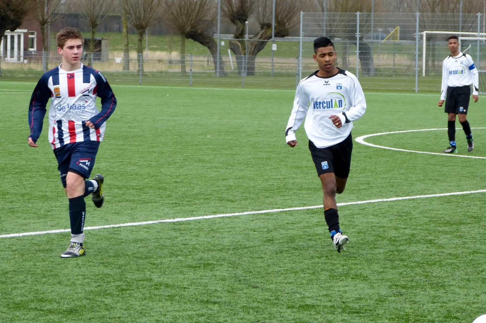

Mijn doelen zijn om een MBO-diplomate halen. Als ik er voor kies om HBO te doen wil ik gaan studeren voor data analist. Voor een opleiding data analist word verwacht een HBO of WO diploma te hebben. Daarna is er nog een keuze wat je moet maken, of je als data analist in de richting busniss of IT gaat volgen. Data analisten houden zich bezig met het verzamlen en controleren van gegevens om deze om te zetten tot informatie. Deze informatie word onderzocht en omgezet in kennis. Met deze kennis kan een bedrijf in een besluitvorming worden gebruikt om de juiste keuzes te maken en een strategie te bepalen. Data analisten werken in bijvoorbeeld ICT-bedrijven,verzekeringsmaatschappijen, banken, woningbouworganisaties, overheidsinstellingen of in de levensmiddelenindustrie, aangezien alle ondernemingen en instellingen te maken hebben met een stroom gegevens die tot informatie verwerkt moet worden. Om een data analist te worden moet je een een afgeronde opleiding hebben op het gebied van wiskunde, economie of econometrie op een HBO of WO niveau.
Wat ik in mijn vrije tijd doe is gamen, muzien luisteren, voetballen en naar de sportschool gaan. Thuis als ik niks te doen heb kijk ik meestal wat er op tv is en als ik er niks bijzonders kan vinden op tv, zet ik een film op. Wanneer het lekker weer is ben ik ook buiten in beweging, meestal is het voetballen.lees meer......
